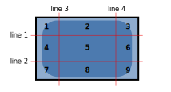

Modelo de cajas¶
Unidades CSS¶
Antes de comenzar a utilizar propiedades que utilicen medidas, como por ejemplo width (propiedad que sirve para establecer un ancho a un elemento concreto), es conveniente conocer los tipos de unidades que pueden utilizarse en CSS para indicar un determinado tamaño . Existen varios tipos de unidades, vamos a desglosarlas en grupos y explicar cada una de ellas. Más adelante veremos las propiedades de CSS que pueden utilizarlas.
Unidades absolutas¶
Las unidades absolutas son un tipo de medida fija que no cambia, que no depende de ningún otro factor. Son ideales en contextos donde las medidas no varían como pueden ser en medios impresos (documentos, impresiones, etc...), pero son unidades poco flexibles y adecuadas para la web actual, ya que no tienen la capacidad de adaptarse a diferentes resoluciones o pantallas, que es lo que tendemos a hacer hoy en día.
Sin embargo, el uso de la unidad px es muy recomendable para el desarrollador (al menos en sus primeros pasos en el diseño web) ya que se trata de una unidad fácil de comprender, muy conocida y que nos permitirá afianzar conceptos a la vez que profundizamos en el diseño web.
Las diferentes unidades absolutas que pueden utilizarse en CSS son las siguientes (de mayor a menor tamaño):
| Unidad | Significado | Medida aproximada |
|---|---|---|
in |
Pulgadas | 1in = 25.4mm |
cm |
Centímetros | 1cm = 10mm |
pc |
Picas | 1pc = 4.23mm |
mm |
Milímetros | 1mm = 1mm |
pt |
Puntos | 1pt = 0.35mm |
px |
Píxels | 1px = 0.26mm |
Q |
Cuarto de mm | 1Q = 0.248mm |
Consejo: El punto (pt) es una medida que puede utilizarse para documentos CSS en los que se fija el tamaño de las fuentes en medios impresos.
Unidades relativas¶
Las unidades relativas son un tipo de medida más potente en CSS. Al contrario que las unidades absolutas, las unidades relativas dependen de algún otro factor (resolución, densidad de pantalla, etc...). Tienen una curva de aprendizaje más compleja, pero son las ideales para trabajar en dispositivos con diferentes tamaños, ya que son muy flexibles y versátiles:
| Unidad | Significado | Medida aproximada |
|---|---|---|
em |
«M» | 1em = tamaño de fuente establecida en navegador |
ex |
«X» (~0.5em) | 1ex = ~ mitad del tamaño de fuente del navegador |
ch |
«zero width» | 1ch = tamaño de ancho del cero ( 0 ) |
rem |
«root M» | 1rem = tamaño fuente raíz |
% |
Porcentaje | Relativa a herencia (contenedor padre) |
La unidad em se utiliza para hacer referencia al tamaño actual de la fuente que ha sido establecido en el navegador, que habitualmente es un valor aproximado de 16px. De esta forma, una cantidad de 1em sería este tamaño establecido por el usuario, mientras que una cantidad de 2em sería justo el doble y una cantidad de 0.5em sería justo la mitad. Por otro lado, con 1ex establecemos la mitad del tamaño de la fuente, ya que 1ex = 0.5em.
Realmente, la medida ex está basada en la altura de la x minúscula, que es aproximadamente un poco más de la mitad de la fuente actual (depende de la tipografía utilizada), o ch , que equivale al tamaño de ancho del 0 de la fuente actual, aunque en la práctica es un tipo de unidad que no suele ser utilizada demasiado.
Una unidad muy interesante y práctica para tipografías es la unidad rem (root em). Esta unidad es muy cómoda, ya que permite establecer un tamaño para el documento en general (utilizando el elemento body o la pseudoclase :root):
body {
font-size: 22px; /* Tamaño general */
}
h1 {
font-size: 2rem; /* El doble del tamaño general: 44px */
}
h2 {
font-size: 1rem; /* El mismo tamaño general: 22px */
}
Posteriormente, podemos ir utilizando la unidad rem en ciertas partes del documento. Con esto, estamos indicando el factor de escala (respecto al tamaño general que indicamos en el body). En el ejemplo anterior, los elementos <h1> tendrán 44 píxels de tamaño, ya que hemos establecido 2rem, que significa «el doble que el tamaño general». Por otro lado, los elementos <h2> tendrían el mismo tamaño: 22 píxels.
Esto nos da una ventaja principal considerable: Si queremos cambiar el tamaño del texto en general, sólo tenemos que cambiar el font-size del elemento body, puesto que el resto de unidades son factores de escalado y se modificarán todas en consecuencia al cambio del body. Algo, sin duda, muy práctico y fácil de modificar.
En general, en diseño web, se recomienda utilizar unidades relativas siempre que sea posible, ya que son unidades mucho más flexibles.
Truco: Cuando se especifican valores de unidades iguales a
0, como por ejemplo0px,0emo0%, podemos omitir las unidades y escribir simplemente0, ya que en este caso particular las undidades son redundantes y no aportan valor.
Unidades flexibles (viewport)¶
Existen unas unidades de "nueva generación" que resultan muy útiles, porque dependen del viewport (región visible de la página web en el navegador). Con estas unidades podemos hacer referencia a un porcentaje concreto del tamaño específico que tengamos en la ventana del navegador, independientemente de si es redimensionado o no. Las unidades son las siguientes:
| Unidad | Significado | Medida aproximada |
|---|---|---|
vw |
viewport width | 1vw = 1% ancho de navegador |
vh |
viewport height | 1vh = 1% alto de navegador |
vmin |
viewport minimum | 1vmin = 1% de alto o ancho (el mínimo) |
vmax |
viewport maximum | 1vmax = 1% de alto o ancho (el máximo) |
La unidad vw hace referencia al ancho del viewport, mientras que vh hace referencia al alto. Por ejemplo, si utilizamos 100vw estaremos haciendo referencia al 100% del ancho del navegador, o sea, todo lo que se está viendo de ancho en pantalla, mientras que si indicamos 50vw estaremos haciendo referencia a la mitad del ancho del navegador.
Por último tenemos vmin y vmax , que simplemente se utilizan para utilizar el porcentaje de ancho o alto del viewport, dependiendo cual sea más pequeño o más grande de los dos, lo que puede ser útil en algunas situaciones donde quieres flexibilidad con diseños adaptables.
Es interesante tener en cuenta que existen una serie de funciones para hacer cálculos con unidades CSS. Son las funciones
calc(),min(),max()oclamp(), entre otras. Las veremos más adelante, en el capítulo de funciones CSS.
Modelo de cajas¶
Durante varios años, el denominado modelo de cajas fue una pesadilla para los desarrolladores web, puesto que se mostraba visualmente de forma diferente en Internet Explorer respecto a los demás navegadores. Por fortuna, todos los navegadores actuales ya interpretan de la misma forma el modelo de cajas, pero conviene aprender bien la diferencia para no ser como Internet Explorer.
La representación básica del modelo de cajas es la siguiente, donde podemos observar varios conceptos importantes a diferenciar:
- El borde (border). En negro, es el límite que separa el interior del exterior del elemento.
- El márgen (margin). En naranja, es la parte exterior del elemento, por fuera del borde.
- El relleno (padding). En verde, es la parte interior del elemento, entre el contenido y el borde.
- El contenido (en azul). En azul, es la parte interior del elemento, excluyendo el relleno.

Dimensiones (ancho y alto)¶
Para dar tamaños específicos a los diferentes elementos de un documento HTML, necesitaremos asignarles valores a las propiedades width (ancho) y height (alto).
| Propiedad | Valor | Significado |
|---|---|---|
width |
auto |size | Tamaño de ancho de un elemento. |
height |
auto |size | Tamaño de alto de un elemento. |
En el caso de utilizar el valor auto en las propiedades anteriores (que es lo mismo que no indicarlas, ya que es el valor que tienen por defecto), el navegador se encarga de calcular el ancho o alto necesario, dependiendo del contenido del elemento. Esto es algo que también puede variar, dependiendo del tipo de elemento que estemos usando, y que veremos más adelante, en el apartado de maquetación.
Hay que ser muy conscientes de que, sin indicar valores de ancho y alto para la caja, el elemento generalmente toma el tamaño que debe respecto a su contenido, mientras que si indicamos un ancho y alto concretos, estamos obligando a CSS tener un aspecto concreto y podemos obtener resultados similares al siguiente (conocida broma de CSS) si su contenido es más grande que el tamaño que hemos definido:

Otra forma de lidiar con esto, es utilizar las propiedades hermanas de width: min-width y max-width y las propiedades hermanas de height: min-height y max-height. Con estas propiedades, en lugar de establecer un tamaño fijo, establecemos unos máximos y unos mínimos, donde el ancho o alto podría variar entre esos valores.
div {
width: 800px;
height: 400px;
background: red;
max-width: 500px;
}
En este caso, por ejemplo, a pesar de estar indicando un tamaño de 800px, le aplicamos un max-width de 500px, por lo que estamos limitando el elemento a un tamaño de ancho de 500 píxeles como máximo y nunca superará ese tamaño.
Por un lado tenemos las propiedades de mínimos min-width y min-height, que por defecto tienen valor 0, mientras que por otro lado, tenemos las propiedades de máximos max-width y max-height, que por defecto tienen valor none:
| Propiedad | Valor | Significado |
|---|---|---|
max-width |
none |size | Ancho máximo que puede ocupar un elemento. |
min-width |
0 |size | Ancho mínimo que puede ocupar un elemento. |
max-height |
none |size | Alto máximo que puede ocupar un elemento. |
min-height |
0 |size | Alto mínimo que puede ocupar un elemento. |
Zonas de un elemento¶
Antes de continuar, es importante saber que en CSS existen ciertas palabras clave para hacer referencia a una zona u orientación concreta sobre un elemento. Son conceptos muy sencillos y prácticamente lógicos, por lo que no tendrás ningún problema en comprenderlos. Son los siguientes:

- Top: Se refiere a la parte superior del elemento.
- Left: Se refiere a la parte izquierda del elemento.
- Right: Se refiere a la parte derecha del elemento.
- Bottom: Se refiere a la parte inferior del elemento.
- Center: En algunos casos se puede especificar el valor
centerpara referirse a la posición central entre los extremos horizontales o verticales.
Estas palabras clave las utilizaremos muy a menudo en diferentes propiedades CSS para hacer referencia a una zona particular.
Desbordamiento¶
Volvamos a pensar en la situación de la imagen anterior: Damos un tamaño de ancho y alto a un elemento HTML, pero su contenido de texto es tan grande que no cabe dentro de ese elemento. ¿Qué ocurriría? Probablemente lo que vimos en la imagen: el contenido se desbordaría.
Podemos modificar ese comportamiento con la propiedad de CSS overflow, o con alguna de sus propiedades específicas overflow-x o overflow-y:
| Propiedad | Valor | Significado |
|---|---|---|
overflow |
visible | hidden | scroll | auto | Establece el comportamiento de desbordamiento. |
overflow-x |
visible | hidden | scroll | auto | Establece el desbordamiento sólo para el eje X (horizontal). |
overflow-y |
visible | hidden | scroll | auto | Establece el desbordamiento sólo para el eje Y (vertical). |
Dichas propiedades pueden tomar varios valores, donde visible es el valor que tiene por defecto, que permite que haya desbordamiento. Otras opciones son las siguientes, donde no se permite desbordamiento:
| Valor | ¿Qué ocurre si se desborda el contenedor? | ¿Desbordamiento? |
|---|---|---|
| visible | Se muestra el contenido que sobresale (comportamiento por defecto) | Sí |
| hidden | Se oculta el contenido que sobresale. | No |
| scroll | Se colocan barras de desplazamiento (horizontales y verticales). | No |
| auto | Se colocan barras de desplazamiento (sólo las necesarias). | No |
Nota: CSS3 añade las propiedades
overflow-xyoverflow-ypara cada eje individual, que antiguamente solo era posible hacerlo conoverflowpara ambos ejes. Estas propiedades son útiles cuando no quieres mostrar alguna barra de desplazamiento, habitualmente, la barra de desplazamiento horizontal.
Márgenes y rellenos¶
En el modelo de cajas, los márgenes (margin) son los espacios exteriores de un elemento. El espacio que hay entre el borde de un elemento y el borde de otros elementos adyacentes, es lo que se considera márgen.
Márgenes¶
Dichos márgenes se pueden considerar en conjunto (de forma general) o de forma concreta en cada una de las zonas del elemento. Veamos primero las propiedades específicas para cada zona:
Propiedad |ValorSignificado
:---|:---|:---
margin-top|auto |size|Establece un tamaño de margen superior.
margin-left|auto |size|Establece un tamaño de margen a la izquierda.
margin-right|auto |size|Establece un tamaño de margen a la derecha.
margin-bottom|auto |size|Establece un tamaño de margen inferior.
Podemos aplicar diferentes márgenes a cada zona de un elemento utilizando cada una de estas propiedades, o dejando al nevegador que lo haga de forma automática indicando el valor auto.
Truco: Existe un truco muy sencillo y práctico para centrar un elemento en pantalla. Basta con aplicar un ancho fijo al contenedor,
width:500px(por ejemplo) y luego aplicar unmargin:auto. De esta forma, el navegador, al conocer el tamaño del elemento (y por omisión, el resto del tamaño de la ventana) se encarga de repartirlo equitativamente entre el margen izquierdo y el margen derecho, quedando centrado el elemento.
Hay que recordar diferenciar bien los márgenes de los rellenos, puesto que no son la misma cosa. Los rellenos (padding) son los espacios que hay entre los bordes del elemento en cuestión y el contenido del elemento (por la parte interior). Mientras que los márgenes (margin) son los espacios que hay entre los bordes del elemento en cuestión y los bordes de otros elementos (parte exterior).
Observese también el siguiente ejemplo para ilustrar el solapamiento de márgenes. Por defecto, si tenemos dos elementos adyacentes con, por ejemplo, margin: 20px cada uno, ese espacio de margen se solapará y tendremos 20px en total, y no 40px (la suma de cada uno) como podríamos pensar en un principio.
Rellenos¶
Al igual que con los márgenes, los rellenos tienen varias propiedades para indicar cada zona:
| Propiedad | Valor | Significado |
|---|---|---|
padding-top |
0 |size | Aplica un relleno interior en el espacio superior de un elemento. |
padding-left |
0 |size | Aplica un relleno interior en el espacio izquierdo de un elemento. |
padding-right |
0 |size | Aplica un relleno interior en el espacio derecho de un elemento. |
padding-bottom |
0 |size | Aplica un relleno interior en el espacio inferior de un elemento. |
Como se puede ver en la tabla, por defecto no hay relleno (el relleno está a cero), aunque puede modificarse tanto con las propiedades anteriores como la propiedad de atajo que veremos a continuación.
Atajo: Modelo de cajas¶
Al igual que en otras propiedades de CSS, también existen atajos para los márgenes y los rellenos:
| Propiedad | Valores | Significado |
|---|---|---|
margin |
1 parámetro. Aplica el mismo margen a todos los lados. | |
| 2 parámetros. Aplica margen top/bottom y left/right. | ||
| 3 parámetros. Aplica margen top, left/right y bottom. | ||
| 4 parámetros. Aplica margen top, right, bottom e left. |
Con las propiedades padding y border-width pasa exactamente lo mismo, actuando en relación a los rellenos, en lugar de los márgenes en el primer caso, y en relación al grosor del borde de un elemento en el segundo.
!!!! Ojo Aunque al principio es muy tentador utilizar márgenes negativos para ajustar posiciones y colocar los elementos como queremos, se aconseja no utilizar dicha estrategia salvo para casos muy particulares, ya que a la larga es una mala práctica que hará que nuestro código sea de peor calidad.
Bordes CSS¶
En CSS es posible especificar el aspecto que tendrán los bordes de cualquier elemento, pudiendo incluso, dar valores distintos a las diferentes zonas predeterminadas del elemento (zona superior, izquierda, derecha o zona inferior).
Las propiedades básicas existentes de los bordes en CSS son las siguientes:
| Propiedad | Valor | Significado |
|---|---|---|
border-color 1234 |
Especifica el color que se utilizará en el borde. | |
border-width |
thin | medium | thick |size | Especifica un tamaño predefinido para el grosor del borde. |
border-style 1234 |
none | style |
Define el estilo para el borde a utilizar (ver más adelante).
En primer lugar, border-color establece el color del borde, de la misma forma que lo hicimos en apartados anteriores de colores. En segundo lugar, con border-width podemos establecer la anchura o grosor del borde utilizando tanto palabras clave predefinidas como un tamaño concreto con cualquier tipo de las unidades ya vistas.
Estilos de borde¶
Por último, con border-style podemos aplicar un estilo determinado al borde de un elemento. En estilo de borde podemos elegir cualquiera de las siguientes opciones:
| Valor | Descripción |
|---|---|
| hidden | Oculto. Idéntico al anterior salvo para conflictos con tablas. |
| dotted | Establece un borde basado en puntos. |
| dashed | Establece un borde basado en rayas (línea discontínua). |
| solid | Establece un borde sólido (línea contínua). |
| double | Establece un borde doble (dos líneas contínuas). |
| groove | Establece un borde biselado con luz desde arriba. |
| ridge | Establece un borde biselado con luz desde abajo. Opuesto a groove. |
| inset | Establece un borde con profundidad «hacia dentro». |
| outset | Establece un borde con profundidad «hacia fuera». Opuesto a inset. |
Veamos un ejemplo sencillo:
div {
border-color: gray;
border-width: 1px;
border-style: dotted;
}
Sin embargo, el borde más frecuente suele ser solid, que no es más que un borde liso. Pueden utilizarse cualquiera de los estilos indicados en la tabla anterior. Veamos como se verían los diferentes estilos de borde utilizando 10 píxels de grosor y color gris:
Bordes múltiples (diferentes)¶
Hasta ahora, sólo hemos utilizado un parámetro en cada propiedad, lo que significa que se aplica el mismo valor para cada borde de un elemento (borde superior, borde derecho, borde inferior y borde izquierdo). Sin embargo, podemos especificar uno, dos, tres o cuatro parámetros, dependiendo de lo que queramos hacer:
| Propiedad | Valor | Significado |
|---|---|---|
border-color |
1 parámetro. Aplica el mismo color a todos los bordes. | |
| 2 parámetros. Aplica al borde top/bottom, y al left/right. | ||
| 3 parámetros. Aplica al top, al left/right y al bottom. | ||
| 4 parámetros. Aplica al top, right, bottom y left. |
De la misma forma, podemos hacer exactamente lo mismo con las propiedades border-width (respecto al ancho del borde) y border-style (respecto al estilo del borde). Teniendo en cuenta esto, disponemos de mucha flexibilidad a la hora de especificar esquemas de bordes más complejos:
div {
border-color: red blue green;
border-width: 2px 10px 5px;
border-style: solid dotted solid;
}
En el ejemplo anterior hemos utilizado 3 parámetros, indicando un elemento con borde superior rojo sólido de 2 píxeles de grosor, con borde izquierdo y derecho punteado azul de 10 píxeles de grosor y con un borde inferior verde sólido de 5 píxeles de grosor.
Atajo: Bordes¶
Pero ya habremos visto que con tantas propiedades, para hacer algo relativamente sencillo, nos pueden quedar varias lineas de código complejas y difíciles de leer. Al igual que con otras propiedades CSS, podemos utilizar la propiedad de atajo border, con la que podemos hacer un resumen y no necesitar utilizar las propiedades individuales por separado, realizando el proceso de forma más corta:
| Propiedad | Valor | Significado |
|---|---|---|
border |
size - style - color | Propiedad de atajo para simplificar valores. |
Por ejemplo:
div {
border: 1px solid #000000;
}
Así pues, estamos aplicando un borde de 1 píxel de grosor, estilo sólido y color negro a todos los bordes del elemento, ahorrando mucho espacio y escribiéndolo todo en una sola propiedad.
Consejo: Intenta organizarte y aplicar siempre los atajos si es posible. Ahorrarás mucho espacio en el documento y simplificarás la creación de diseños. El orden, aunque no es obligatorio, si es recomendable para mantener una cierta coherencia con el estilo de código.
Bordes específicos¶
Otra forma, quizás más intuitiva, es la de utilizar las propiedades de bordes específicos (por zonas) y aplicar estilos combinándolos junto a la herencia de CSS. Para utilizarlas bastaría con indicarle la zona justo después de border-:
div {
border-bottom-width: 2px;
border-bottom-style: dotted;
border-bottom-color: black;
}
Esto dibujaría sólo un borde inferior negro de 2 píxeles de grosor y con estilo punteado. Ahora imaginemos que queremos un elemento con todos los bordes en rojo a 5 píxeles de grosor, salvo el borde superior, que lo queremos con un borde de 15 píxeles en color naranja. Podríamos hacer lo siguiente:
div {
border: 5px solid red;
border-top-width: 15px;
border-top-color: orange;
border-top-style: solid; /* Esta propiedad no es necesaria (se hereda) */
}
El ejemplo anterior conseguiría nuestro objetivo. La primera propiedad establece todos los bordes del elemento, sin embargo, las siguientes propiedades modifican sólo el borde superior, cambiándolo a las características indicadas.
Recuerda que también existen atajos para estas propiedades de bordes en zonas concretas, lo que nos permite simplificar aún más el ejemplo anterior, haciéndolo más fácil de comprender:
div {
border: 5px solid red;
border-top: 15px solid orange;
}
Ojo: Es muy importante entender como se está aplicando la herencia en los ejemplos anteriores, puesto que es una de las características más complejas de dominar de CSS junto a la cascada. Por ejemplo, si colocaramos el
border-topantes delborder, este último sobreescribiría los valores deborder-topy no funcionaría de la misma forma.
Esquinas redondeadas¶
CSS3 añade interesantes características en materia de bordes, como la posibilidad de crear bordes con esquinas redondeadas, característica que en versiones anteriores de CSS era muy complicado de lograr, necesitando recurrir al apoyo de imágenes gráficas. Por su parte, en CSS3 es realmente sencillo hacerlo mediante código.
Basta utilizar la propiedad border-radius, con la cual podrás especificar un radio para el borde de las esquinas. Por defecto, este borde es de tamaño 0, por lo que no hay borde redondeado. A medida que se aumenta este valor, el borde se redondea más. Una vez llegado a su máximo, no se apreciará ningún cambio.
Hay varias formas de especificar el radio de las esquinas:
| Propiedad | Valor | Significado |
|---|---|---|
border-radius |
1 parámetro. Aplica el radio a todas y cada una de las esquinas. | |
| 2 parámetros: top-left + bottom-right y a top-right + bottom-left. | ||
| 3 parámetros: top-left, a top-right y bottom-left y a bottom-right. | ||
| 4 parámetros. Orden de las agujas del reloj, empezando por top-left. |
El primer formato, un único parámetro, aplica ese tamaño a todas las esquinas del borde.
El segundo formato, con dos parámetros, aplica el primer valor, e1, a las esquinas superior-izquierda e inferior-derecha, y el segundo valor, e2, a las esquinas superior-derecha e inferior-izquierda.
En el tercer formato, se aplica el parámetro e1 a la esquina superior-izquierda, el parámetro e2 a las esquinas superior-derecha e inferior-izquierda y el parámetro e3 a la esquina inferior-derecha.
Y por último, en el cuarto formato, se aplica el tamaño de cada valor a cada esquina por separado, en el sentido de las agujas del reloj. O lo que es lo mismo, e1 a la esquina superior-izquierda, e2 a la esquina superior-derecha, e3 a la esquina inferior-derecha y e4 a la esquina inferior-izquierda.
A modo de ejemplo teórico, pueden ver un ejemplo de la aplicación de varios formatos:
div {
border-radius: 25px; /* Formato con un parámetro */
border-radius: 25% 50%; /* Formato con dos parámetros */
border-radius: 50px 25px 10px; /* Formato con tres parámetros */
border-radius: 25px 0 15px 50px; /* Formato con cuatro parámetros */
}
Esquinas irregulares¶
Truco: Es posible diferenciar el radio horizontal del radio vertical de una esquina determinada, creando una esquina redondeada irregular.
Para conseguirlo, no hay más que añadir una barra (/) y repetir nuevamente el número de parámetros escogido. De esta forma, los parámetros a la izquierda de la barra representan el radio horizontal, mientras que los que están a la derecha, representan el radio vertical.
div {
/* Usando el segundo formato */
border-radius: 5px 50px / 50px 15px;
}
Esquinas específicas¶
De la misma forma que hemos visto con anterioridad en otras propiedades CSS similares, también es posible especificar los valores de cada esquina mediante propiedades por separado:
| Propiedad | Valor | Significado |
|---|---|---|
border-top-left-radius |
Indica un radio para redondear la esquina top-left. | |
border-top-right-radius |
Indica un radio para redondear la esquina top-right. | |
border-bottom-left-radius |
Indica un radio para redondear la esquina bottom-left. | |
border-bottom-right-radius |
Indica un radio para redondear la esquina bottom-right. |
Estas propiedades son ideales para aplicar junto a la herencia de CSS y sobreescribir valores específicos.
Bordes con imágenes¶
Una de las limitaciones que tenía CSS, es que, si en lugar de utilizar los bordes de los que disponemos en CSS (sólidos, punteados, etc...) quisieramos hacer algo un poco más complejo con imágenes, podría volverse una tarea muy complicada. Por esa razón, CSS3 incorporó en su momento un sistema para crear bordes extensibles basados en una imagen de molde.
La técnica 9-slice¶
Dicho sistema se denomina 9-slice (muy utilizado en videojuegos) y se basa en delimitar una imagen trazando cuatro líneas (en rojo). Esto hará que la imagen quede dividida en 9 fragmentos, donde el fragmento central es descartado y el resto es utilizado de molde para los bordes de un elemento:

De esta forma, los fragmentos 1, 3, 7 y 9 se utilizarán para las esquinas y los fragmentos 2, 4, 6 y 8 se utilizarán para los bordes laterales, pudiendo expandirlos si se requiere y considera necesario con alguna de las propiedades que veremos a continuación.
Vamos a utilizar la siguiente imagen expandible (a la izquierda), que simula ser un antiguo carrete fotográfico, como imagen de borde. Las líneas rojas no forman parte de la imagen original, sino que se utilizan en este ejemplo para dejar claro cuáles serían los límites marcados con border-image-slice. Una vez hecho esto, conseguiremos el resultado de la imagen de la derecha, en el cuál podremos ampliar el texto del elemento lo que queramos, que se adaptará solo a su contenido:
Para ello, utilizaremos el siguiente código CSS, donde antes que nada, establecemos un ancho al elemento con width y un border básico para que, en el caso de navegadores que no soporten border-image, tenga al menos un borde básico y nos sirva también como base a lo que vamos a hacer a continuación:
.borde {
width: 200px;
border: 42px solid black;
border-image-width: 1;
border-image-source: url(https://i.imgur.com/YC5PUl6.png);
border-image-slice: 23%;
border-image-repeat: round;
}
Para establecer los límites y poder utilizar imágenes en los bordes, hemos hecho uso de las siguientes propiedades de CSS:
| Propiedad | Valor | Significado |
|---|---|---|
border-image-width |
1 | | | auto | Grosor de la imagen de borde. |
border-image-source |
none | url(imagen.png) | Imagen a utilizar de molde para el 9-slice. |
border-image-slice |
100% | | | fill | Tamaño de los bordes en la imagen. |
border-image-outset |
0 | | Tamaño en el que el borde crece hacia fuera. |
- La propiedad
border-image-widthindica el tamaño que tendrá el borde de la imagen. El tamaño puede ser indicado con unidades (píxeles o porcentajes, por ejemplo) o sin ellas, lo que lo tomará como múltiplo del tamaño indicado enborder-width.
En nuestro ejemplo, tanto indicarle un valor de 1 como dejarlo sin especificar, sería decirle que el tamaño del borde de la imagen será de 42px, pero por ejemplo, si indicamos border-image-width: 2, le estaremos indicando que use un tamaño de 84px. Al igual que vimos en el apartado de margin se puede indicar 1, 2, 3 o 4 parámetros .
Consejo: No olvides que hay que indicar también un
border-widthy unborder-stylepara que el borde CSS esté definido y se pueda visualizar.
- La propiedad
border-image-sourceestablece, mediante la expresión url(), la imagen que vamos a utilizar para crear nuestro borde con imágenes.
Truco: ¡Como imagen de fondo puedes utilizar un gradiente de CSS, ya que internamente se interpretan como imágenes!
- La propiedad
border-image-slicedefine la posición de las líneas divisorias de la imagen, o lo que es lo mismo, el tamaño de los bordes. Por defecto, el valor es de 100% (tamaño de ancho completo de la imagen), pero también podemos usar números sin unidad, que simbolizan píxeles de recorte. Se pueden especificar 1, 2, 3 ó 4 parámetros.
Por otro lado, el valor opcional fill sirve para indicar que quieres rellenar el elemento con el fondo del fragmento 5, que por defecto es descartado. Útil en casos que quieras aprovechar el fondo.
En nuestro caso, nos podría valer tanto con 110 (110 píxeles de recorte) como con 23%, ya que es más o menos la cantidad apropiada para establecer el límite tanto de ancho como de alto.
- La propiedad
border-image-outsetestablece el factor de crecimiento (hacia fuera) de la imagen. Muy útil para compensar la imagen si se extiende hasta el contenido. Usar con cuidado, ya que puede desplazar el contenido. Por defecto no tiene desplazamiento.
Modo de repetición¶
Habremos comprobado que en algunas ocasiones, el modo en que se repite la imagen de borde no es la apropiada, o al menos, no es la que más se adapta a nuestro caso específico. Este comportamiento se puede variar mediante la propiedad border-image-repeat:
| Propiedad | Valor | Significado |
|---|---|---|
border-image-repeat |
[repetición en X e Y] | 1 parámetro. Comportamiento de repetición en ambos ejes. |
| [rep. en X] [rep. en Y] | 2 parámetros. Comportamiento de repetición por separado. |
Con dicha propiedad se establece como deben comportarse los fragmentos del borde y el tipo de repetición que deben efectuar. Se puede usar la modalidad de un parámetro en la que se aplica a todos los bordes, o la modalidad de dos parámetros donde estableces diferente comportamiento para los bordes horizontales y verticales.
Esta propiedad puede tomar los siguientes valores:
| Valor | Significado |
|---|---|
| stretch | Los bordes se estiran hasta rellenar el área. Es el valor por defecto. |
| repeat | Los bordes se repiten hasta rellenar el área. |
| round | Igual que repeat, pero estira los fragmentos individualmente hasta rellenar el área completa. |
| space | Igual que repeat, pero añade espacios hasta rellenar el área completa. |
Para verlo más claramente, echemos un vistazo a esta representación visual del comportamiento de cada uno:
Es importante recalcar los dos últimos valores (round y space) actúan igual que repeat, pero con un comportamiento ligeramente diferente que nos puede interesar en el caso de que la zona repetida quede descompensada.
Utilizando la imagen y código CSS anterior, obtendríamos un resultado similar a este, que se adaptaría sólo al contenido que escribamos dentro del elemento HTML con clase borde :
Atajo: Bordes con imágenes¶
Como suele ser costumbre, este tipo de propiedades tienen una propiedad para ahorrar espacio y escribirlo todo de una sola vez. En este caso, la sintaxis es la siguiente:
div {
/* border-image: <source> <slice> <width> <outset> <repeat> */
border-image: url(https://i.imgur.com/YC5PUl6.png) 23% 1 0 round;
}
Funciones CSS¶
En CSS, muchas veces necesitaremos un sistema de apoyo para realizar operaciones más cercanas a un lenguaje de programación que a un lenguaje de estilos, como pueden ser cálculos o utilizar valores precalculados. Por esta razón, con el tiempo, se han ido añadiendo mejoras, como las custom properties, un mecanismo similar a unas variables CSS.
En este artículo vamos a ver algunas funciones CSS, que no son más que funciones de apoyo que podemos utilizar en CSS para realizar cálculos u operaciones sencillas de una forma fácil y sencilla, sin tener que abandonar CSS.
Un resumen de las funciones CSS que veremos:
| Función CSS | Descripción |
|---|---|
calc() |
Permite calcular operaciones con unidades CSS como px, %, vw, vh u otras. |
min() |
Permite calcular el valor mínimo de las unidades indicadas. |
max() |
Permite calcular el valor máximo de las unidades indicadas. |
clamp() |
Permite calcular valores «ajustados». Equivalente a max(MIN, min(VAL, MAX)). |
attr() |
Permite obtener el valor de un atributo desde CSS. |
Valores calculados: Función calc()¶
Es posible que en algunas ocasiones necesitemos indicar valores precalculados por el navegador. Por ejemplo, la suma de dos valores que a priori desconocemos o no sabemos exactamente cuanto suman, pero que el navegador si debería conocer.
Esto es posible hacerlo con la función calc() de CSS, como se muestra a continuación:
.elemento {
width: calc(200px + 1em);
height: 300px;
background: blue;
}
Como se puede ver, se pueden usar operaciones como sumas ( + ), restas ( - ), multiplicaciones ( * ) o divisiones ( / ) que utilicen alguna de las unidades soportadas por CSS, como por ejemplo, números, dimensiones, porcentajes, tiempos, ángulos, etc...
Ten en cuenta que también se pueden anidar funciones calc() una dentro de otra. Resulta especialmente interesante su utilización junto a variables (custom properties CSS).
Valor mínimo: Función min()¶
En algunas ocasiones, necesitaremos que en una propiedad se aplique un valor de varias posibilidades posibles. De dichas posibilidades, no sabremos exactamente cuál necesitamos, pero si sabremos una de sus cualidades: es la más pequeña, es decir, necesitamos el valor mínimo.
CSS permite realizar esto utilizando la función min() que nos permite elegir el valor más pequeño de 2 o más posibilidades aplicadas por parámetro:
.elemento {
width: min(200px, 25%);
height: 200px;
background: red;
}
Esto aplicaría un width de 200px, siempre y cuando el 25% del elemento padre sea más grande de 200px. Todo este cálculo, generalmente realizado en Javascript debido a su cualidad de lógica de cálculo, puede realizarse desde CSS si sólo se utiliza exclusivamente para esta finalidad.
Valor máximo: Función max()¶
De la misma forma que tenemos una función min(), también tenemos una función max(). Como podemos imaginar, dicha función sirve para lo opuesto de la función min(): obtener el valor máximo entre varias posibilidades.
Observa el siguiente ejemplo, donde utilizamos más de 2 parámetros (ambas funciones permiten múltiples valores, no necesariamente dos):
.elemento {
width: max(200px - 100px, 25%, 14vw);
height: 200px;
background: red;
}
Observa que como se ve en el ejemplo en 200px - 100px, tanto en min() como en max(), puedes realizar operaciones directamente en su interior sin necesidad de utilizar la función calc().
Valor ajustado: Función clamp()¶
Ahora pensemos en un caso que podríamos necesitar y que se puede volver algo poco legible. Imagina que necesitas obtener el valor mínimo
Con la función clamp() podemos realizar, de forma concisa la operación max(MIN, min(VAL, MAX)). Veamos un ejemplo:
.elemento {
width: max(100px, min(25%, 300px));
width: clamp(100px, 25%, 300px);
height: 200px;
background: red;
}
Observa que existen dos líneas con un width. Ambas líneas son equivalentes. El primer valor de clamp() sería el valor mínimo, mientras que el tercero es el valor máximo. De esta forma, el navegador realiza lo siguiente:
- Obtiene el valor mínimo entre el segundo y tercer parámetro.
- Obtiene el valor máximo entre el primer parámetro y el resultado anterior.
- Utiliza el resultado de la operación anterior en el
width.
El soporte en navegadores de estas 3 últimas funciones es el siguiente:
Valor del atributo: Función attr()¶
Aunque no es de género matemático como las anteriores, existe la función CSS attr(), que es algo más particular, ya que permite obtener el valor de un atributo HTML y utilizarlo desde CSS, generalmente para temas de decoración.
Por ejemplo, observa el siguiente fragmento de código:
<div class="element" data-author="Manz"></div>
<style>
.element::before {
content: attr(data-author);
font-size: 22px;
color: #444;
}
</style>
Por medio de una pseudoclase CSS, utilizando la propiedad content, le pedimos al navegador que utilice el metadato del atributo data-author del elemento donde se le está aplicando el CSS para mostrarlo como contenido.
Esta función CSS es la más antigua y la mejor soportada en navegadores:
Fuente: Lenguaje de CSS por Manz